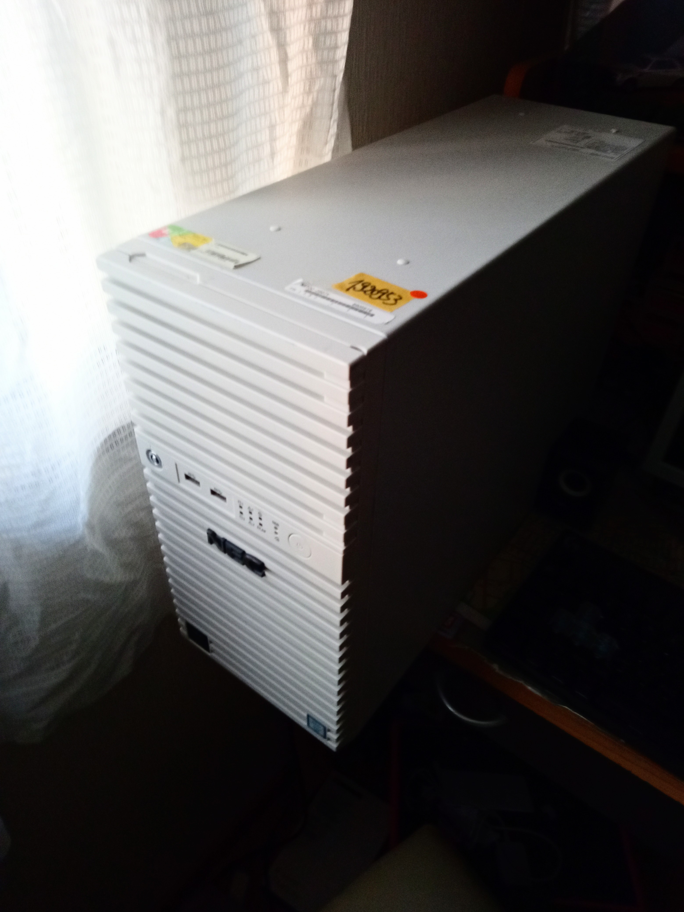

・メインPCの紹介

・現在のスペック
CPU: Xeon E3-1260L v6CPUクーラー: AINEX 青いLEDクーラー (型番忘れた)
マザーボード:GA-6KASV3-NJ (NEC Exprepss5800/T110iのマザーボード)
Memory: DDR4 8GB 1枚 (型番不明
GPU: ASUS GTX1050Ti
SSD: Samsung NVMe SSD 256GB 2枚 (型番不明、接続方法はPCIe x8を変換、1枚認識していない)
HDD: なし(もとはHDDがついていた、容量不明)
PCIe WiFi: Fenvi 1200Mbps (型番不明)
電源: たぶんFSP製の550w電源
5インチベイ: なし
ケース: Express5800/T110iの純正ケース
・現メインPCを使っていて思ったこと...
正直に言うと、8世代じゃないんでコア数が少なくて、大きな処理には耐えられないようです。
具体的に言うと、Robloxのフロントラインをやりながら、録画/Discordで配信はきついですね...
あと、メモリが8GBしかないのはきついです。まぁ後に、64GB(16GB 4枚)に増設します^^